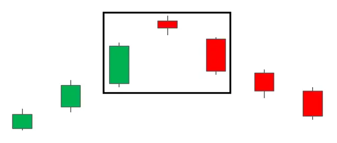
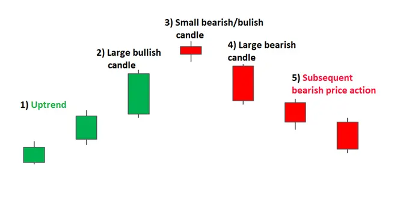

ईवनिंग स्टार पैटर्न एक उपट्रेंड के शीर्ष पर दिखने वाला एक तीन कैंडल, बियरिश रिवर्सल कैंडलस्टिक पैटर्न है। यह एक नए डाउनट्रेंड के निर्माण से पहले एक बियरिश मूव के लिए उद्यमशीलता की धीमी होने की संकेत देता है।

| HOW TO IDENTIFY AN EVENING STAR ON FOREX CHARTS |
फॉरेक्स चार्ट पर शाम सितारे की पहचान सिर्फ तीन मुख्य मोमबत्तियों की पहचान से ज्यादा है। इसके लिए, पिछली कीमत क्रिया और मौजूदा रुझान में पैटर्न का पता होना आवश्यक है।

ट्रेडर्स अक्सर बाजार में अनिश्चितता के संकेत खोजते हैं जहां खरीदारी दबाव कम हो जाता है और बाजार कुछ ठोस नहीं रहता। यह एक डोजी कैंडल के लिए आदर्श स्थान होता है।
| HOW TO TRADE THE EVENING STAR CANDLESTICK PATTERN |
यहां नीचे दिए गए EUR/GBP चार्ट में शाम का सितारा पैटर्न देखा जा सकता है, जहाँ एक पलटाव के पैटर्न के गठन से पहले एक स्थापित उच्चतम बाजार उत्पन्न होता है।
चार्ट को देखते हुए, एक बार पैटर्न का गठन पूरा होने के बाद, ट्रेडर्स बहुत जल्दी अगली मुमकिन शाम के खुलते ही प्रवेश करने की कोशिश कर सकते हैं। अधिक सतर्क ट्रेडर्स अपने प्रवेश को देरी से कर सकते हैं और देख सकते हैं कि क्या मूल्य गतिविधि कम होती है। हालांकि, इसका नुकसान यह हो सकता है कि ट्रेडर बहुत बुरे स्तर पर प्रवेश कर सकता है, विशेष रूप से त्वरित गतिविधि वाले बाजारों में।
लक्ष्य पहले सहायता स्तरों या पूर्व समेकन क्षेत्रों पर रखे जा सकते हैं। स्टॉप हाल के स्विंग हाई से ऊपर रखे जा सकते हैं, क्योंकि इस स्तर के ब्रेक उल्टा विपरीत रिवर्सल को अमान्य कर देगा। फॉरेक्स मार्केट में कोई गारंटी नहीं होती है, इसलिए ट्रेडर हमेशा संभवतः ध्यानवश रिस्क प्रबंधन अपनाना चाहिए जबकि सकारात्मक रिस्क-रिवार्ड अनुपात को बनाए रखना चाहिए।

जब फॉरेक्स मार्केट में ईवनिंग स्टार ट्रेड करते हैं, तो कीमत अक्सर स्टॉक्स की तरह गैप नहीं करती है, इसलिए तीन कैंडल पैटर्न पिछले स्तर के बहुत करीब खोलता है।